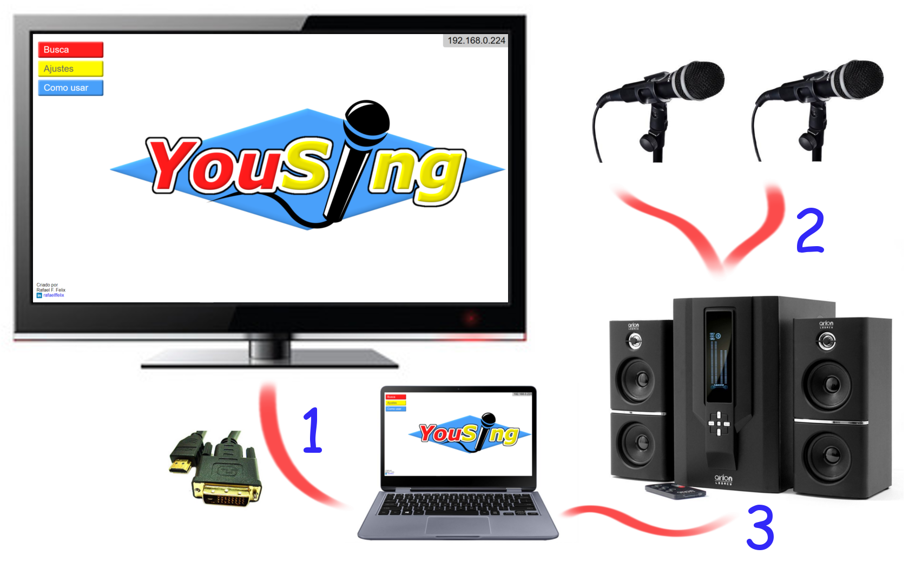
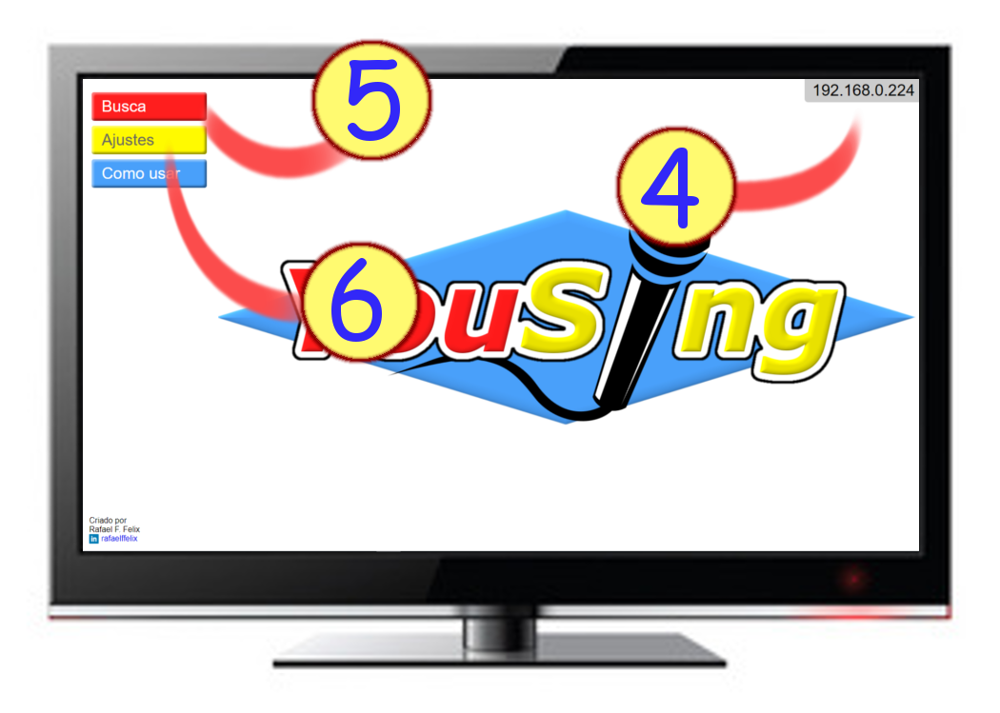

Bem-vindo(a) a YouSing!
Se você está vendo esta página é porque instalou corretamente o programa e está pronto para começar a cantar com seus amigos. Porém, antes disto, seguem algumas recomendações para tornar a sua experiência ainda mais marcante:

- Conecte o computador em uma televisão, ou em um monitor maior.
Nem sempre "maior é melhor", mas quando se trata de enxergar as letras das músicas ninguém quer ficar espremendo os olhos por causa de uma tela pequena. Com uma tela maior todos podem enxergar com facilidade.
- Utilize microfones. E os conecte a um aparelho de som.
Não tenha vergonha, cante alto! Para ajudar a entrar no clima, nada melhor do que cantar no microfone. E se os vizinhos reclamarem, chame-os para cantar junto!
- Conecte o computador ao aparelho de som.
Se fosse para cantar sem acompanhamento não precisaríamos de um programa de karaokê, certo? Talvez o som do computador ou da televisão não seja o suficiente para acompanhar toda a sua energia. Que tal dar um "up" no volume com o auxílio do aparelho de som?

- Escolha sua próxima música pelo celular!
Conecte o computador, seu celular e o celular de seus amigos na mesma rede wi-fi e tenha a facilidade de poder escolher sua próxima música pelo celular. Basta acessar o endereço mostrado no canto superior direito da tela no navegador do seu smartfone ou tablet. As músicas adicionadas serão tocadas automaticamente na ordem que forem enviadas à lista.
- Ou utilize a busca na tela principal.
Caso não seja possível utilizar o controle remoto pelo celular, é possível utilizar a busca pela tela principal do aplicativo. Basca clicar em "Busca" e escolher sua próxima música.
- Defina a linguagem principal.
Clicando em "Ajustes" é possível definir a linguagem do aplicativo principal. Esta opção não muda a linguagem dos controles remotos: esta é definida durante o primeiro acesso de cada aparelho celular.
- Divirta-se!
Não importa como você use este aplicativo, o importante é se divertir! E caso encontre algum problema, entre em contato pelo site do YouSing.
Sobre
Este programa é distribuído sem nenhum custo sob a licença GNU General Public License v3.0. Isso significa que este é um programa "open source" e todos são livres para utilizar e distribuir YouSing gratuitamente. Desenvolvedores também podem utilizar parcialmente ou integralmente seu código fonte desde que o autor (Rafael F. Felix) seja mencionado no programa criado.